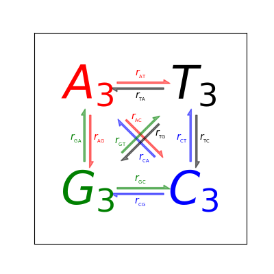

Arrow drawing example for the new fancy_arrow facilities.
Code contributed by: Rob Knight <rob@spot.colorado.edu>
usage:
python arrow_demo.py realistic|full|sample|extreme
import matplotlib.pyplot as plt
import numpy as np
rates_to_bases = {'r1': 'AT', 'r2': 'TA', 'r3': 'GA', 'r4': 'AG', 'r5': 'CA',
'r6': 'AC', 'r7': 'GT', 'r8': 'TG', 'r9': 'CT', 'r10': 'TC',
'r11': 'GC', 'r12': 'CG'}
numbered_bases_to_rates = {v: k for k, v in rates_to_bases.items()}
lettered_bases_to_rates = {v: 'r' + v for k, v in rates_to_bases.items()}
def add_dicts(d1, d2):
"""Adds two dicts and returns the result."""
result = d1.copy()
result.update(d2)
return result
def make_arrow_plot(data, size=4, display='length', shape='right',
max_arrow_width=0.03, arrow_sep=0.02, alpha=0.5,
normalize_data=False, ec=None, labelcolor=None,
head_starts_at_zero=True,
rate_labels=lettered_bases_to_rates,
**kwargs):
"""Makes an arrow plot.
Parameters:
data: dict with probabilities for the bases and pair transitions.
size: size of the graph in inches.
display: 'length', 'width', or 'alpha' for arrow property to change.
shape: 'full', 'left', or 'right' for full or half arrows.
max_arrow_width: maximum width of an arrow, data coordinates.
arrow_sep: separation between arrows in a pair, data coordinates.
alpha: maximum opacity of arrows, default 0.8.
**kwargs can be anything allowed by a Arrow object, e.g.
linewidth and edgecolor.
"""
plt.xlim(-0.5, 1.5)
plt.ylim(-0.5, 1.5)
plt.gcf().set_size_inches(size, size)
plt.xticks([])
plt.yticks([])
max_text_size = size * 12
min_text_size = size
label_text_size = size * 2.5
text_params = {'ha': 'center', 'va': 'center', 'family': 'sans-serif',
'fontweight': 'bold'}
r2 = np.sqrt(2)
deltas = {
'AT': (1, 0),
'TA': (-1, 0),
'GA': (0, 1),
'AG': (0, -1),
'CA': (-1 / r2, 1 / r2),
'AC': (1 / r2, -1 / r2),
'GT': (1 / r2, 1 / r2),
'TG': (-1 / r2, -1 / r2),
'CT': (0, 1),
'TC': (0, -1),
'GC': (1, 0),
'CG': (-1, 0)}
colors = {
'AT': 'r',
'TA': 'k',
'GA': 'g',
'AG': 'r',
'CA': 'b',
'AC': 'r',
'GT': 'g',
'TG': 'k',
'CT': 'b',
'TC': 'k',
'GC': 'g',
'CG': 'b'}
label_positions = {
'AT': 'center',
'TA': 'center',
'GA': 'center',
'AG': 'center',
'CA': 'left',
'AC': 'left',
'GT': 'left',
'TG': 'left',
'CT': 'center',
'TC': 'center',
'GC': 'center',
'CG': 'center'}
def do_fontsize(k):
return float(np.clip(max_text_size * np.sqrt(data[k]),
min_text_size, max_text_size))
A = plt.text(0, 1, '$A_3$', color='r', size=do_fontsize('A'),
**text_params)
T = plt.text(1, 1, '$T_3$', color='k', size=do_fontsize('T'),
**text_params)
G = plt.text(0, 0, '$G_3$', color='g', size=do_fontsize('G'),
**text_params)
C = plt.text(1, 0, '$C_3$', color='b', size=do_fontsize('C'),
**text_params)
arrow_h_offset = 0.25 # data coordinates, empirically determined
max_arrow_length = 1 - 2 * arrow_h_offset
max_head_width = 2.5 * max_arrow_width
max_head_length = 2 * max_arrow_width
arrow_params = {'length_includes_head': True, 'shape': shape,
'head_starts_at_zero': head_starts_at_zero}
ax = plt.gca()
sf = 0.6 # max arrow size represents this in data coords
d = (r2 / 2 + arrow_h_offset - 0.5) / r2 # distance for diags
r2v = arrow_sep / r2 # offset for diags
# tuple of x, y for start position
positions = {
'AT': (arrow_h_offset, 1 + arrow_sep),
'TA': (1 - arrow_h_offset, 1 - arrow_sep),
'GA': (-arrow_sep, arrow_h_offset),
'AG': (arrow_sep, 1 - arrow_h_offset),
'CA': (1 - d - r2v, d - r2v),
'AC': (d + r2v, 1 - d + r2v),
'GT': (d - r2v, d + r2v),
'TG': (1 - d + r2v, 1 - d - r2v),
'CT': (1 - arrow_sep, arrow_h_offset),
'TC': (1 + arrow_sep, 1 - arrow_h_offset),
'GC': (arrow_h_offset, arrow_sep),
'CG': (1 - arrow_h_offset, -arrow_sep)}
if normalize_data:
# find maximum value for rates, i.e. where keys are 2 chars long
max_val = 0
for k, v in data.items():
if len(k) == 2:
max_val = max(max_val, v)
# divide rates by max val, multiply by arrow scale factor
for k, v in data.items():
data[k] = v / max_val * sf
def draw_arrow(pair, alpha=alpha, ec=ec, labelcolor=labelcolor):
# set the length of the arrow
if display == 'length':
length = max_head_length + data[pair] / sf * (max_arrow_length -
max_head_length)
else:
length = max_arrow_length
# set the transparency of the arrow
if display == 'alpha':
alpha = min(data[pair] / sf, alpha)
# set the width of the arrow
if display == 'width':
scale = data[pair] / sf
width = max_arrow_width * scale
head_width = max_head_width * scale
head_length = max_head_length * scale
else:
width = max_arrow_width
head_width = max_head_width
head_length = max_head_length
fc = colors[pair]
ec = ec or fc
x_scale, y_scale = deltas[pair]
x_pos, y_pos = positions[pair]
plt.arrow(x_pos, y_pos, x_scale * length, y_scale * length,
fc=fc, ec=ec, alpha=alpha, width=width,
head_width=head_width, head_length=head_length,
**arrow_params)
# figure out coordinates for text
# if drawing relative to base: x and y are same as for arrow
# dx and dy are one arrow width left and up
# need to rotate based on direction of arrow, use x_scale and y_scale
# as sin x and cos x?
sx, cx = y_scale, x_scale
where = label_positions[pair]
if where == 'left':
orig_position = 3 * np.array([[max_arrow_width, max_arrow_width]])
elif where == 'absolute':
orig_position = np.array([[max_arrow_length / 2.0,
3 * max_arrow_width]])
elif where == 'right':
orig_position = np.array([[length - 3 * max_arrow_width,
3 * max_arrow_width]])
elif where == 'center':
orig_position = np.array([[length / 2.0, 3 * max_arrow_width]])
else:
raise ValueError("Got unknown position parameter %s" % where)
M = np.array([[cx, sx], [-sx, cx]])
coords = np.dot(orig_position, M) + [[x_pos, y_pos]]
x, y = np.ravel(coords)
orig_label = rate_labels[pair]
label = '$%s_{_{\mathrm{%s}}}$' % (orig_label[0], orig_label[1:])
plt.text(x, y, label, size=label_text_size, ha='center', va='center',
color=labelcolor or fc)
for p in sorted(positions):
draw_arrow(p)
# test data
all_on_max = dict([(i, 1) for i in 'TCAG'] +
[(i + j, 0.6) for i in 'TCAG' for j in 'TCAG'])
realistic_data = {
'A': 0.4,
'T': 0.3,
'G': 0.5,
'C': 0.2,
'AT': 0.4,
'AC': 0.3,
'AG': 0.2,
'TA': 0.2,
'TC': 0.3,
'TG': 0.4,
'CT': 0.2,
'CG': 0.3,
'CA': 0.2,
'GA': 0.1,
'GT': 0.4,
'GC': 0.1}
extreme_data = {
'A': 0.75,
'T': 0.10,
'G': 0.10,
'C': 0.05,
'AT': 0.6,
'AC': 0.3,
'AG': 0.1,
'TA': 0.02,
'TC': 0.3,
'TG': 0.01,
'CT': 0.2,
'CG': 0.5,
'CA': 0.2,
'GA': 0.1,
'GT': 0.4,
'GC': 0.2}
sample_data = {
'A': 0.2137,
'T': 0.3541,
'G': 0.1946,
'C': 0.2376,
'AT': 0.0228,
'AC': 0.0684,
'AG': 0.2056,
'TA': 0.0315,
'TC': 0.0629,
'TG': 0.0315,
'CT': 0.1355,
'CG': 0.0401,
'CA': 0.0703,
'GA': 0.1824,
'GT': 0.0387,
'GC': 0.1106}
if __name__ == '__main__':
from sys import argv
d = None
if len(argv) > 1:
if argv[1] == 'full':
d = all_on_max
scaled = False
elif argv[1] == 'extreme':
d = extreme_data
scaled = False
elif argv[1] == 'realistic':
d = realistic_data
scaled = False
elif argv[1] == 'sample':
d = sample_data
scaled = True
if d is None:
d = all_on_max
scaled = False
if len(argv) > 2:
display = argv[2]
else:
display = 'length'
size = 4
plt.figure(figsize=(size, size))
make_arrow_plot(d, display=display, linewidth=0.001, edgecolor=None,
normalize_data=scaled, head_starts_at_zero=True, size=size)
plt.draw()
plt.show()
Total running time of the script: ( 0 minutes 0.103 seconds)